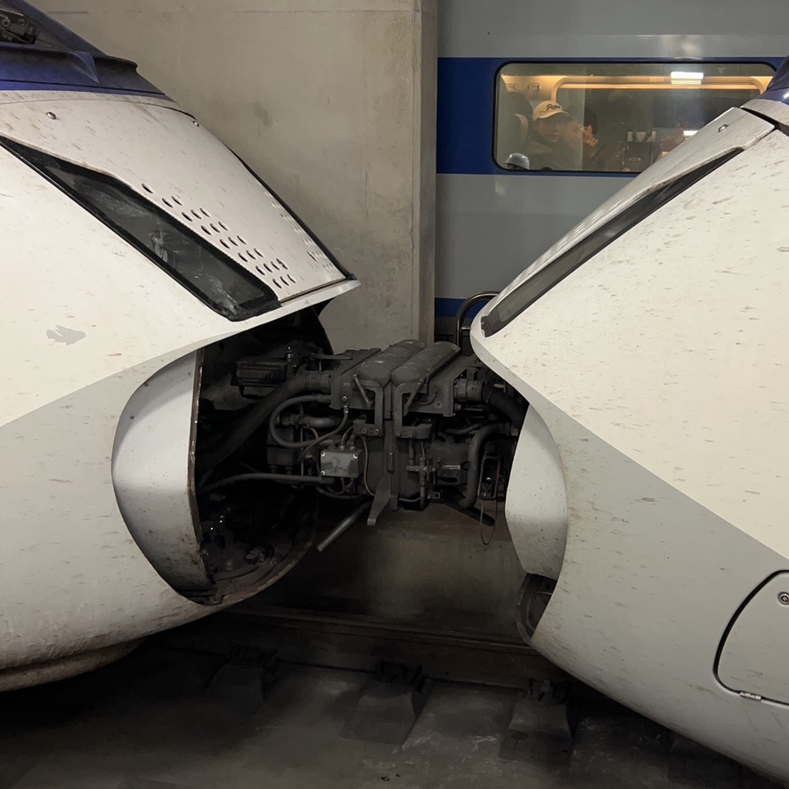
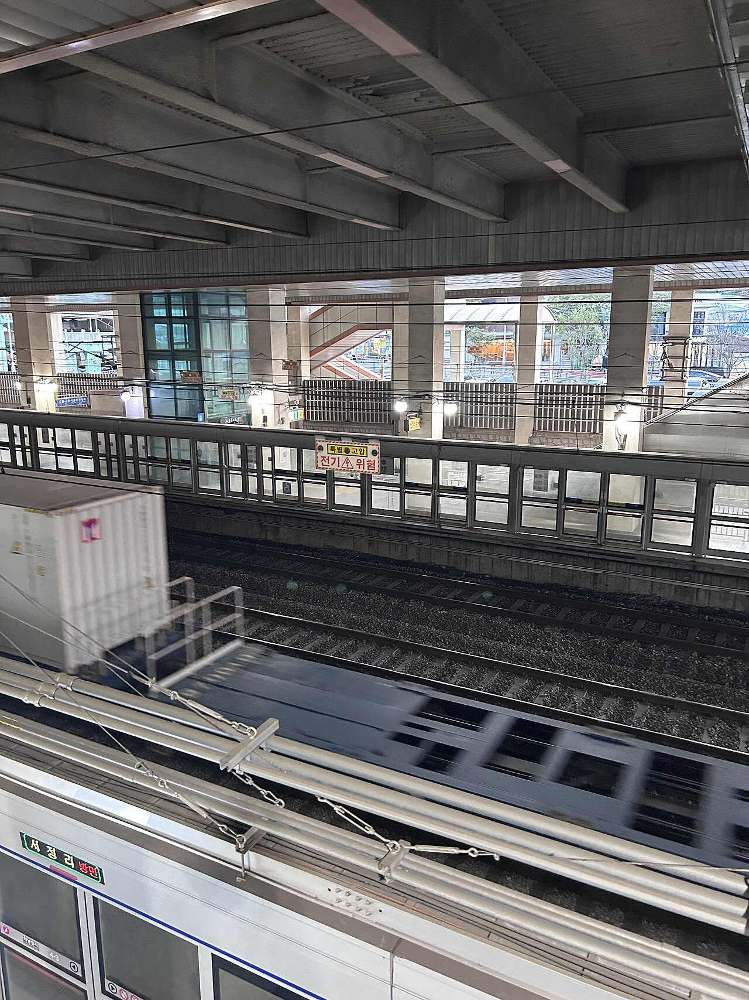

철도사고 3년 새 절반, 탈선은 5년간 열차사고의 79%
KTX-산천 비상제동 부품 교체주기 5년
국내 목침목 160만9000개 연말까지 점검
입환 작업 하루 약 1370회, 사망 3건
AI경제저널=김갑봉 기자 | 국토교통부가 11월 16일 정부세종청사에서 제4차 철도 안전 간담회를 열었다. 한국철도공사(코레일), 국가철도공단, 한국철도기술연구원, 한국교통안전공단과 민간 전문가가 함께했다.
간담회는 하반기에 난 주요 철도사고·운행장애 15건의 원인과 재발방지대책을 짚었다. 국토부는 철도사고가 줄고 있으나 비슷한 사고와 운행장애가 되풀이된다고 밝혔다. 철도안전법은 철도사고와 철도준사고 외에 철도차량 운행에 지장을 주는 것을 운행장애로 정하고, 세부는 국토교통부령에 맡긴다.
다섯 해 철도사고 313건과 탈선 68건
국토부 간담회 자료를 보면 철도사고는 2022년 82건, 2023년 68건, 2024년 46건, 2025년 42건이었다. 2025년은 2022년의 절반 수준이다. 2026년은 10월까지 25건이다.
국가 공식 통계인 e-나라지표 철도사고현황은 2022년 79건, 2024년 45건으로 간담회 자료와 조금 다르다. 이 지표 해설을 보면 2020~2024년 다섯 해 동안 철도사고는 313건이었다.
이 가운데 충돌·탈선·화재 등 열차사고가 86건으로 27.5%를 차지했다. 열차사고 86건 가운데 탈선이 68건(79.1%)으로 가장 많았고, 충돌은 15건이었다. 같은 기간 건널목사고는 37건이었다.
KTX 동력전달장치와 KTX-산천 비상제동
국토부와 관계기관은 KTX 동력전달장치 고장과 관련해 같은 장치를 쓰는 열차 11편성 점검을 마쳤다. 제동장치와 전기제어장치 고장을 막으려고 노후 부품을 바꾸고 정비 방법도 고친다.
국토부는 KTX-산천의 갑작스러운 비상제동을 막으려고 관련 전기부품인 중련계전기의 교체주기를 15년에서 5년으로 줄였다. 제동장치의 공기압을 감지하는 스위치 10개도 미리 바꿨다.

목침목 160만9000개와 선로전환기
부산역 탈선사고 뒤 국토부는 열차가 자주 다니는 24개 역 선로 가운데 위험이 큰 구간의 목침목을 먼저 점검·보강했다. 목침목은 레일 아래 가로로 놓여 레일을 받치고 열차 무게를 나누는 나무 받침대다.
국토부는 보호장치인 궤간 확장 방지장치 125개를 달았다. 국내 목침목 160만9000개는 연말까지 모두 점검한다. 노후 목침목 약 1만6000개는 올해 안에 새 침목으로 바꾼다. 점검 물량의 약 1%다.
선로전환기는 열차가 다른 선로로 옮겨 가게 레일을 움직이는 장치다. 서울역 안 67개소의 주요 작동부에는 윤활 조치를 마쳤다. 고장 난 전환기와 같은 유형은 11월 안에 모두 점검한다.
국토부는 화물열차 탈선과 여객열차 무정차 통과 같은 사고를 막으려고 열차를 세우고 출발시킬 때 지킬 운전 절차를 고쳤다. 승무사업소 특별 안전점검도 했다.
서 있던 열차가 저절로 움직이는 열차 구름이 생기면 곧바로 관제에 알리고 주변 선로를 확인하게 절차를 정했다. 51개 승무사업소의 열차 운전 담당자는 특별 안전교육을 받았다.

입환 사망사고 3건과 후방카메라
입환은 철도차량을 잇고 떼고 옮기는 작업이다. 국토부 9월 29일 자료를 보면 115개 역에서 하루 평균 약 1370회 입환이 이뤄진다. 이 가운데 41.4%는 작업자가 차량에 올라타야 한다.
최근 10년 입환 작업에서 사망사고 3건, 부상사고 7건이 났다. 사망사고는 2017년 5월 광운대역, 2022년 11월 오봉역, 2026년 8월 의왕역에서 일어났다. 국토부는 9월 29일 차량정리 작업 안전강화대책을 내놨다.
세 사망사고는 모두 기관사가 뒤를 보기 어려운 후진 과정에서 났다. 작업자가 화차 바깥에 타고 이동했거나, 기관사나 로컬관제와 소통이 모자란 상황이었다. 로컬관제는 역 안 신호와 선로전환기를 다루는 관제다.
한국교통대 소속 전영석은 2013년 한국철도학회논문집에 실은 논문에서 입환의 정의와 구분, 방법이 국내 법규에 명확하지 않다고 짚었다. 그 탓에 당시 입환 때 충돌사고가 철도차량 운전사고 가운데 가장 잦았다고 지적했다.
코레일은 작업자가 화차 바깥에 타지 않아도 차량 뒤를 보는 후방카메라 기술 개발을 11월 마쳤다. 현장 검증을 거쳐 도입할 역을 정한다.
무선제어 차량정리 시스템은 제천조차장 상선, 영주, 괴동 3개 역에 들어갔다. 2027년까지 8개 역으로 늘리고, 2028년 의왕역에도 도입을 추진한다. 인공지능(AI) CCTV로 작업자 위험을 미리 알리는 시스템은 2027년 동해역에 시범 도입한다.
김태병 국토부 철도국장은 "유사한 사고가 반복되는 것은 기존 대책의 현장 이행력과 안전관리 체계를 근본적으로 점검해야 한다는 의미"라고 밝혔다. 국토부는 연내 철도 안전 강화 종합대책을 내놓는다.
참고문헌
공식 발표자료와 공공기록
- "국토부, 반복되는 철도사고·운행장애 예방에 관계기관 및 전문가 역량 결집", 국토교통부, 2026.11.16., https://www.molit.go.kr/USR/NEWS/m_71/dtl.jsp?id=95092603
- "철도 차량정리 작업, 위험구역 노출 줄이고 현장 안전체계 강화", 국토교통부, 2026.9.29., https://www.molit.go.kr/USR/NEWS/m_71/dtl.jsp?id=95092468
- "철도안전법" 제2조(정의) 제13호, 국가법령정보센터, https://www.law.go.kr/법령/철도안전법/제2조
- "철도사고현황"(자료 한국교통안전공단 철도안전정보포털), e-나라지표, 2026.10.6. 갱신, https://www.index.go.kr/unify/idx-info.do?idxCd=1251
연구보고서와 논문
- 전영석, 「안전 및 효율성 제고를 위한 입환방식에 열차운전원칙 적용에 관한 연구」, 『한국철도학회논문집』 16(2), 79~84쪽, 한국철도학회, 2013.4.28., https://doi.org/10.7782/JKSR.2013.16.2.079
[사진 출처]
- [사진 1] Bykim2012, 「KTX 객차의 중련모습.jpg」(2026.11.1. 촬영), CC0(퍼블릭 도메인 헌정), 위키미디어 공용, https://commons.wikimedia.org/wiki/File:KTX_객차의_중련모습.jpg
- [사진 2] Bykim2012, 「송탄역 화물열차.jpg」(2026.9.16. 촬영), CC0(퍼블릭 도메인 헌정), 위키미디어 공용, https://commons.wikimedia.org/wiki/File:송탄역_화물열차.jpg
관련기사
- 5차 국가철도망 600조원 건의, 영호남 대도시 잇는 고속철도 0개
- 고속철도 통합 60일, 늘어난 승객 절반 넘게 수서축
- [철도] KTX-1 46편성 수명 2033년, 발주 시한은 2027년
저작권자 © AI경제저널 무단전재 및 재배포, AI학습 및 활용 금지